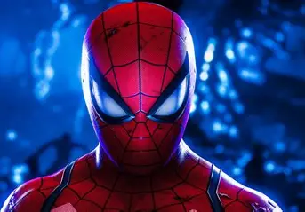

Spider-Man to superbohater znany z komiksów Marvela. Jego prawdziwe imię
to Peter Parker, młody mieszkaniec Nowego Jorku. Po ugryzieniu przez radioaktywnego
pająka zyskał niezwykłe zdolności. Swoje moce wykorzystuje, aby pomagać ludziom
i walczyć z przestępcami
Z wielką mocą wiąże się wielka odpowiedzialność
Pierwszy komiks Spider-Man ukazał się w 1962r.
Jad pająka zawiera związki H2O i białka